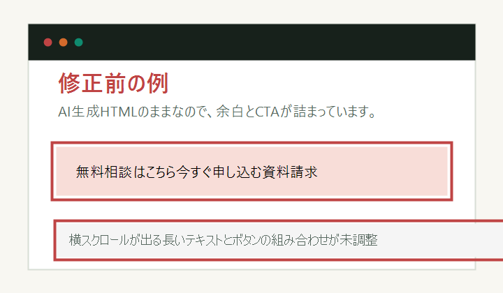
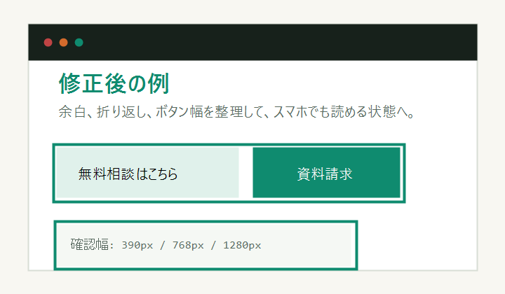

表示崩れの修正
余白、横スクロール、画像のはみ出し、ボタンの位置ずれ、スマホだけ崩れる箇所を確認します。
Service
「全部作り直し」ではなく、今あるHTMLやLPを触って直す仕事に絞ります。 依頼者側の確認コストを下げるため、修正前後と差分をセットで出します。
余白、横スクロール、画像のはみ出し、ボタンの位置ずれ、スマホだけ崩れる箇所を確認します。
重複CSS、読みにくいクラス名、不要なインライン指定を減らし、保守しやすい構造に寄せます。
変更ファイル、修正理由、確認した画面幅、残課題をまとめて、GitHub PRまたはZIPで渡します。
ECサイトやLPのQ&A欄を、見た目と見出し構造をそろえて追加します。必要なら構造化データのたたき台も用意します。
コラム記事の見出し、画像、alt文、スマホ表示を確認し、公開前チェックつきで入稿できる形に整えます。
ヘッダー、ナビ、CTA、フッターなど、支給画像や既存ページに合わせた小さいHTML/CSSパーツを組みます。
AI生成PHPフォームの入力検証、メール送信、エラー表示、CSRFなどを小規模な一次確認として整理します。
Examples


ECサイト向けのQ&Aセクション実装例: サンプルページを見る / 提案ページを見る / 記事入稿サンプルを見る / 共通パーツ実装サンプルを見る / PHPフォーム安全確認サンプルを見る
Pricing
1箇所から依頼できます。作業前に範囲を切るので、見積もりが膨らみません。 継続修正やページ全体の調整は、対象ファイル数と確認画面幅で見積もります。
Request
いま困っているページ、HTML/CSSファイル、または修正指示を送ってください。 触れる範囲と納品形式を確認してから作業します。
正式な契約・支払いは、クラウドワークス、ココナラ、その他の取引プラットフォーム経由にも合わせられます。 GitHub Issueは、公開できる範囲の事前相談だけに使ってください。